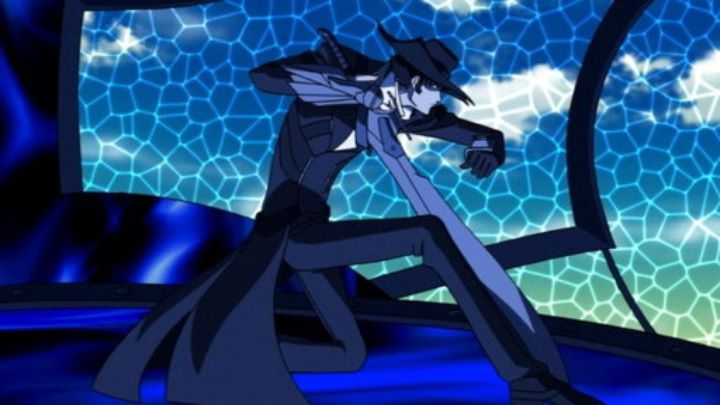

There's a popular anime franchise called "Code Geass." I'm a fan. I like the supernatural fantasy-sci-fi elements, the political themes driving the action, and even the unusually-skinny character designs, thunderous musical score, and theatrical direction and editing. Yes, director Goro Taniguchi has an original style, and despite only having seen the one show from him, I was a fan. Like most misguided fans, I looked at the filmography of this director I liked, hoping to find another series to watch.This led me to "Gun X Sword," the 2005 series that Taniguchi directed prior to "Code Geass," and one that seemed to have the most similarities (otherwise, the 2001 out-of-print series "s-CRY-ed" and perhaps 2015's "Maria the Virgin Witch" were the only other relevant shows of mention). And after the first episode, I got what I asked for. Despite coming from a different studio with a different story and setting, this sci-fi-Western features elongated character designs, mech battles, a quirky lead hero, and even a near-identical trumpet-forward action musical score (by the same composer in Kotaro Nakagawa), hand-painted still pictures in the ending credits, and a little fanservice (albiet tamer than what "Geass" had). It mirrored a lot of the features "Code Geass" was known for: if you liked the style of that series (rather than just being obsessed with the cast or universe) and haven't yet discovered "Gun X Sword," it's a surprising find. Evitably, I can't help but compare the two series throughout this review either, for better or for worse."Gun X Sword" isn't really a politically-charged epic, but an episodic Western set on some alternate-future place called "The Planet of Endless Illusion," featuring a lone drifter named Van. Van is tall, quiet, wears a black cowboy-themed tuxedo (passersby note the formality despite his walking on foot across the land). Like any protagonist, he also has an unusual defining trait: he likes condiments, drenching fish, steak or chicken with ketchup, mayonaise, soy sauce, and anything else the kitchen has in stock, until the main dish is unrecognizable (whether this is for the flavor storm, or to add free calories to a rare meal, is left to the viewer to decide). The unlikely hero is also lazy, doing his best to not meddle in local affairs for some code of justice, but still occasionally finds the need to take out his whip (that turns into a long blade) to take out bandits that wish to cause harm. In more extreme cases, he twists his cowboy hat to summon a massive Gunam-like robot from the sky, and pilots it to fight against other "armors" that the foe somehow came to own. It's a bizarre mashup of genres, perhaps most resembling "Trigun" at first, with hints of "Geass," "Cowboy Bebop," and maybe "Samurai Champloo." The show seems to be in no hurry to explain itself either. The story is driven by Van's secret quest to find some mysterious arch-enemy known as "The Claw" (this man killed Van's bride on his wedding day), and in the first episode, he saves a small town and winds up with a young travel companion named Wendy, on her own quest to find her missing brother. They travel from town to town, looking for clues for The Claw's whereabouts. Each town has its' own story, one episode each, usually with some new villain harrassing the town that gets in their way. Either that, or an episode focuses on character development and learning the secrets Van and Wendy each hold. This goes on for quite a while in the 26-episode series.Director Taniguchi's direction is still engaging, but the story is severely lacking at first. It's easy to fall into a trap with this type of plot pattern, wherein nothing of importance happens for several episodes, and "Gun X Sword" doesn't fare well, due to a story without a clear direction to follow. Van, quirky as he is, is a little too boring to be a compelling lead, and virtually all the characters are just as one-dimensional.The main appeal, beyond the "endless journey," seems to be the variety of antagonists, each wildly and comically different, with showmanship and charisma to make them as entertaining as they are absurd. For example, the first villain's theme is "luck," proudly playing Russian Roulette with his pistol to prove his favor with God before decimating a town for its money and women. Another strives to create a new country, and has a superpowered moustache that infinitely stretches, using it to take a town's money and women. Their intentions and disregard to human life are dark, a weird mismatch to the otherwise cartoon-like villain descriptions. Regardless, they helped make the early episodes more bearable, if only to watch what absurd new scenario the series would come up with next.  This all is specifically regarding the first several episodes of "Gun X Sword." But you can't judge a show from just the first episode; it turns out things change drastically when they finally find The Claw, randomly halfway through the series. The Claw isn't at all who I expected, and makes for a much more interesting villain with grand plans for world peace (at least, his version of it). And when he enters the scene, there are twists and revelations, and comedy is left aside in lieu of Van's revenge-driven madness as swords clash. Characters spout about their ideals as they attack each other. It's intense. It's dramatic. It's cliche. It's fantastic. ... and after this mid-series climax, it reverts back to wandering from town to town, until the final showdown begins in the final episodes. "Gun X Sword" seems to have the inverse issue that "Trigun" had, a series that was at its best in comedy, but insisted on spending two-thirds of its run on serious sci-fi drama. In this case, the series spends about two-thirds of its episodes on comedy that makes for acceptable, but disappointing, filler material. Director Taniguchi clearly has his strengths firmly in drama-driven action, and I don't know if it was him or some other producer that insisted on the overall genre choice. Anyway, the point is that "Gun X Sword" rewards viewers who stick through to the end. It doesn't typically make sense, but at its best, it's thrilling action. At a time when "Code Geass" technically didn't exist yet, it's easy to understand how it'd find an appreciative audience. Production values have certainly aged a bit in terms of animation, but gets significantly better when the series shifts from comedy to action. Character designs are distinct from most anime, with tall, skinny characters (and women with tight outfits). The weapons are bizarre, but kinda loook cool, and the mech designs are original too. The musical score is memorable, a mixture of tones inspired by cowboy Westerns and Japanese samurai films. The English dub was originally produced by Geneon in North America (the series was re-released by Funimation after the company went bankrupt). "Code Geass" had a great dub, so you'd think a cowboy-styled series would be even better here. Unfortunately, it isn't. The voices for most the main cast doesn't really fit with their roles, with the most passable being Wendy Garret. For Van in particular, the lone hero who doesn't seem to care, the tone, delivery, and dialogue translation was poor. I blame ADR direction overall, but regardless, it's worth sticking with the Japanese dub for this one. Like everything else, issues with the dub are most noticable just early on, and gets significantly better by the time The Claw enters the show, and remains mostly improved for the rest (perhaps I just got used to it by then). Funimation's S.A.V.E. DVD release includes a bonus disc to hold special features, including a comedic short tie-in series (with a full English dub too). It's been a long time since I've seen a company bother to press an extra disc to hold that sort of thing (if it doesn't fit on the main discs, it's automatically out), so getting around to this was a blast from the past. That describes the worst of the show, with the at-the-time-common tendency to add comedic filler to extend a show to twice the necessary episode-runtime. "Gun X Sword" was spoiled for me after having already seen "Code Geass" (and all the other great shows from the 5+ years after this show released). There is great material in it, but you have to wade through simplistic characters and a mixed sense of humor to find it. And if, like me, you came here after watching "Geass," you'll find this show to be the closest alternative.
- "Ani" More reviews can be found at : https://2danicritic.github.io/ Previous review: review_Guilty_Crown Next review: review_Gunbuster_2